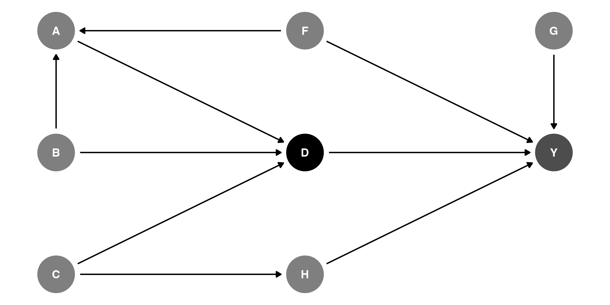
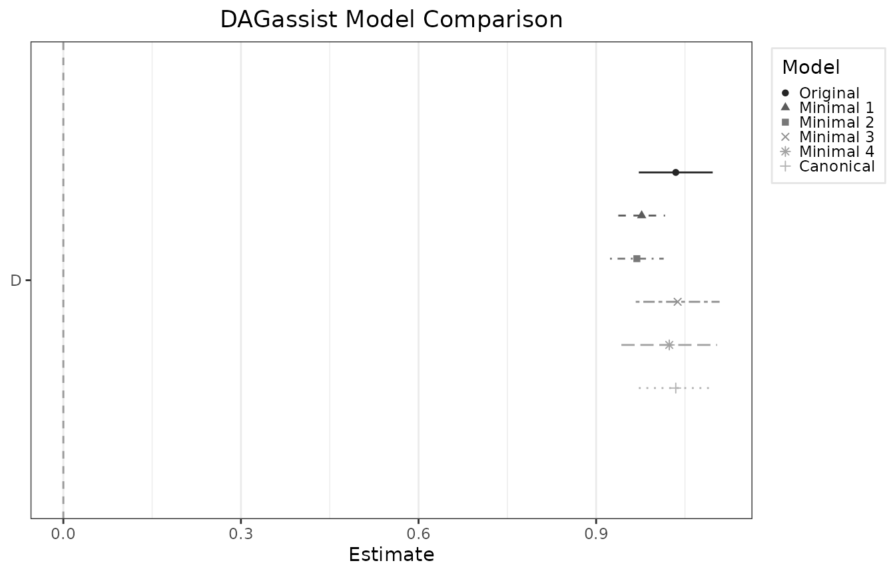

Introduction
This vignette explains how to make publication-grade DAGassist reports in LaTeX, Word, Excel, and plaintext. Since this package’s primary utility is as a robustness check for observational studies, most of its functionality revolves around creating reports.
Install and load DAGassist
# install development release from github
install.packages("pak")
pak::pak("grahamgoff/DAGassist")
# or, install stable release from CRAN
install.packages("DAGassist")
#load DAGassist
library(DAGassist) Setup
In addition to loading DAGassist, we will load the
following baseline packages:
-
modelsummaryto build the model comparison table for LaTeX, Word, Excel, and plaintext.- LaTeX uses
broomas a fallback for report generation
- LaTeX uses
-
knitrto build intermediate .md for Word and plaintext report generation. -
rmarkdownto convert .md files to .docx files for Word report generation. -
writexlto export Excel files.
Essentially, to export:
-
LaTeX only needs
modelsummary -
Excel needs
modelsummaryandwritexl -
plaintext needs
modelsummaryandknitr -
Word needs
modelsummary,knitr, andrmarkdown
Example DAG

The data, which simulates the DAG relationships:
head(df)
#> Y D H A G F
#> 1 -4.3598990 -1.7293707 -1.2908129 -0.3906503 -0.15030748 -0.5116037
#> 2 1.6129050 1.0748492 0.2956294 0.6771872 -0.32775713 0.2369379
#> 3 1.5096451 1.0922811 -1.1613337 1.1254048 -1.44816529 -0.5415892
#> 4 1.1554071 -0.5867292 1.3752785 -0.5173670 -0.69728458 1.2192276
#> 5 0.2920729 -2.0225129 -1.1232830 -1.8569842 2.59849023 0.1741359
#> 6 3.1428430 3.0900447 1.1675898 2.6936976 -0.03741501 -0.6152683
#> C B
#> 1 -0.99579872 -0.56047565
#> 2 -1.03995504 -0.23017749
#> 3 -0.01798024 1.55870831
#> 4 -0.13217513 0.07050839
#> 5 -2.54934277 0.12928774
#> 6 1.04057346 1.71506499Creating a report
Suppose you wrote an article uses model original as its
main finding, and you want to ensure that your specification captures
the total effect of D on Y, without mediator
or collider bias.
original <- lm(Y ~ D + G + H + F + A + B + C, data = df)DAGassist can generate a report assessing the causal roles of the
variables in original.
Roles
| Variable | Role | Exp. | Out. | CON |
MED |
COL |
dOut |
dMed |
dCol |
dConfOn | dConfOff | NCT |
NCO |
|---|---|---|---|---|---|---|---|---|---|---|---|---|---|
| A | nct | x | x | ||||||||||
| B | nct | x | |||||||||||
| C | nct | x | |||||||||||
| D | exposure | x | |||||||||||
| F | confounder | x | |||||||||||
| G | nco | x | |||||||||||
| H | nco | x | |||||||||||
| Y | outcome | x |
Models
| Term | Original | Minimal 1 | Minimal 2 | Minimal 3 | Minimal 4 | Canonical |
|---|---|---|---|---|---|---|
| D | 1.034*** | 0.977*** | 0.969*** | 1.038*** | 1.024*** | 1.034*** |
| (0.032) | (0.020) | (0.023) | (0.036) | (0.041) | (0.032) | |
| G | 0.397*** | 0.397*** | ||||
| (0.032) | (0.032) | |||||
| H | 0.486*** | 0.522*** | 0.495*** | 0.486*** | ||
| (0.032) | (0.028) | (0.031) | (0.032) | |||
| F | 0.618*** | 0.606*** | 0.593*** | 0.618*** | ||
| (0.037) | (0.036) | (0.040) | (0.037) | |||
| A | -0.111** | 0.158*** | 0.169*** | -0.111** | ||
| (0.043) | (0.047) | (0.051) | (0.043) | |||
| B | -0.008 | -0.161*** | -0.162*** | -0.008 | ||
| (0.039) | (0.045) | (0.049) | (0.039) | |||
| C | 0.037 | 0.420*** | 0.391*** | 0.037 | ||
| (0.042) | (0.040) | (0.045) | (0.042) | |||
| Num.Obs. | 1000 | 1000 | 1000 | 1000 | 1000 | 1000 |
| R2 | 0.836 | 0.809 | 0.769 | 0.762 | 0.724 | 0.836 |
Notes
- Roles legend: X (exposure); Y (outcome); CON (confounder); MED (mediator); COL (collider); dOut (proper descendant of Y); dMed (proper descendant of any mediator); dCol (proper descendant of any collider); dConfOn (descendant of a confounder on a back-door path); dConfOff (descendant of a confounder off a back-door path); NCT (neutral control on treatment); NCO (neutral control on outcome).
- p-value legend: + < 0.1, * < 0.05, ** < 0.01, *** < 0.001.
- Controls (minimal): {F, H}.
- Controls (canonical): {A, B, C, F, G, H}.
Creating sub-reports (roles-only or models-only)
Sometimes you only need one part of the report. Use the
show argument to generate just the roles grid or just the
model comparison:
show = "roles"– produce only the DAG-based roles table.
No model is fitted, and noformulaordatais required. This is ideal when your regression engine isn’t supported or you simply want to audit variable roles.show = "models"– produce only the model comparison (Original / Minimal / Canonical).
Requires a model specification (either a formula or a single engine call); no roles table is printed.
Examples
DAGassist(dag = dag_model,
show = "roles")
#> DAGassist Report:
#>
#> Roles:
#> variable role Exp. Out. conf med col dOut dMed dCol dConfOn dConfOff NCT NCO
#> D exposure x
#> Y outcome x
#> F confounder x
#> A nct x x
#> B nct x
#> C nct x
#> G nco x
#> H nco x
#>
#> Roles legend: Exp. = exposure/treatment; Out. = outcome; CON = confounder; MED = mediator; COL = collider; dOut = descendant of outcome; dMed = descendant of mediator; dCol = descendant of collider; dConfOn = descendant of a confounder on a back-door path; dConfOff = descendant of a confounder off a back-door path; NCT = neutral control on treatment; NCO = neutral control on outcomeMaking a dot‑whisker plot of the key coefficient
# Returns a ggplot object (prints if out = NULL; saves if out is a file path)
DAGassist(dag = dag_model,
formula = lm(Y ~ D + G + H + F + A + B + C, data = df),
type = "dotwhisker")
Using special canonical sets
By default, DAGassist() reports the canonical adjustment
set, which only excludes non-admissible adjustments (colliders,
mediators, and their descendants). Sometimes, users may want to see the
canonical set minus certain classes of “neutral” controls, per
Hunermund, Louw and Ronkko (2025). The exclude = argument
enables selective exclusion of neutral controls.
-
exclude = "nct"drops neutral controls on the treatment -
exclude = "nco"drops neutral controls on the outcome
DAGassist Report:
Models
| Term | Original | Minimal 1 | Minimal 2 | Minimal 3 | Minimal 4 | Canonical | Canon. (-NCT) | Canon. (-NCO) |
|---|---|---|---|---|---|---|---|---|
| D | 1.034*** | 0.977*** | 0.969*** | 1.038*** | 1.024*** | 1.034*** | 0.982*** | 1.019*** |
| (0.032) | (0.020) | (0.023) | (0.036) | (0.041) | (0.032) | (0.019) | (0.038) | |
| G | 0.397*** | 0.397*** | 0.395*** | |||||
| (0.032) | (0.032) | (0.032) | ||||||
| H | 0.486*** | 0.522*** | 0.495*** | 0.486*** | 0.511*** | |||
| (0.032) | (0.028) | (0.031) | (0.032) | (0.026) | ||||
| F | 0.618*** | 0.606*** | 0.593*** | 0.618*** | 0.583*** | 0.618*** | ||
| (0.037) | (0.036) | (0.040) | (0.037) | (0.034) | (0.044) | |||
| A | -0.111** | 0.158*** | 0.169*** | -0.111** | -0.088+ | |||
| (0.043) | (0.047) | (0.051) | (0.043) | (0.050) | ||||
| B | -0.008 | -0.161*** | -0.162*** | -0.008 | -0.013 | |||
| (0.039) | (0.045) | (0.049) | (0.039) | (0.046) | ||||
| C | 0.037 | 0.420*** | 0.391*** | 0.037 | 0.403*** | |||
| (0.042) | (0.040) | (0.045) | (0.042) | (0.041) | ||||
| Num.Obs. | 1000 | 1000 | 1000 | 1000 | 1000 | 1000 | 1000 | 1000 |
| R2 | 0.836 | 0.809 | 0.769 | 0.762 | 0.724 | 0.836 | 0.835 | 0.770 |